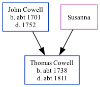

Thomas Cowell c1738 - c1811
[ Home ] | [ Calendar ] | [ Surnames Index ] | [ Family History ]The child of John Cowell and Susanna, Thomas Cowell, the fifth times great-uncle of <a href="I1.html">Nigel Horne</a>, was born <i>c.</i> 1738 and baptized in Minster, Thanet, Kent, England on Jan 10, 1738.<p>He died <i>c.</i> 1811 and was buried in Margate, Kent, England on Oct 5, 1811<span class="citation">1,2</span>.
Parents
- John was born c. 1701
Citations
- Kent, Canterbury Archdeaconry burials 1538-1988 - Findmypast
- Kent, Canterbury Archdeaconry burials 1538-1988 - Findmypast
Media
Kent, Canterbury Archdeaconry burials 1538-1988 - GBPRS/CANT/D/95006418
Kent, Canterbury Archdeaconry burials 1538-1988 - GBPRS/CANT/D/95164836
Canterbury Baptisms Transcription - GBPRS-CANT-B-96507661
Family Tree
Generated by Ged2Site. Last updated on Jul 20, 2025